Работу видно на фото
Качество монтажа заметно даже неспециалисту: трубы в одной плоскости, одинаковый шаг клипс, подписанные линии. На фотографии это не спрячешь — в отличие от слов в объявлении.
СтройИнвест → Наши работы
Здесь фотографии с объектов, которые делала наша бригада: котельные, водоподготовка, коллекторы, щиты, септики, дренаж и автополив. Снимает мастер прямо на работе — поэтому кадры разные, зато свои.
Что делаем
Качество монтажа заметно даже неспециалисту: трубы в одной плоскости, одинаковый шаг клипс, подписанные линии. На фотографии это не спрячешь — в отличие от слов в объявлении.
Септик, вода, отопление, электрика и полив — всё делаем сами. Не нужно искать четырёх подрядчиков и разбираться, кто виноват, когда что-то не сходится.
На коллекторах и в щитах ставим бирки с назначением. Через год никто не помнит, что куда идёт — а хозяину дома это нужно ровно тогда, когда что-то потекло.
Копаем, монтируем, подключаем и запускаем. Уезжаем только после того, как система отработала при вас и вы поняли, где что включается.
Как проходит работа
Расспрашиваем про дом и участок, договариваемся о дне выезда.
в день обращенияСмотрим место, считаем объём, называем точную цену.
бесплатноДелаем сами, без субподряда. Показываем ход работ по ходу дела.
от 1 дняПроверяем при вас и объясняем, где что включается и что обслуживать.
в день сдачиПортфолио
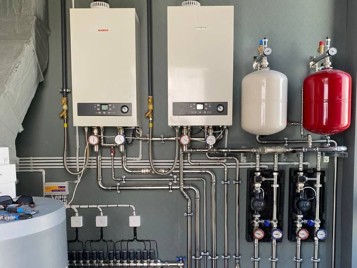
Котельная на двух котлахДва котла и обвязка нержавейкой — узел для большого дома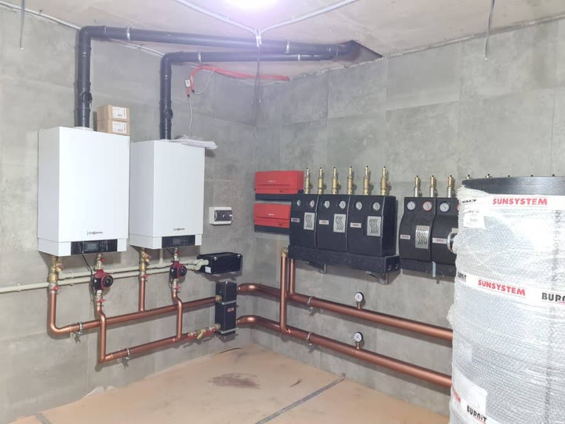
Котельная на медных трубахМедная обвязка и своя насосная группа на каждый контур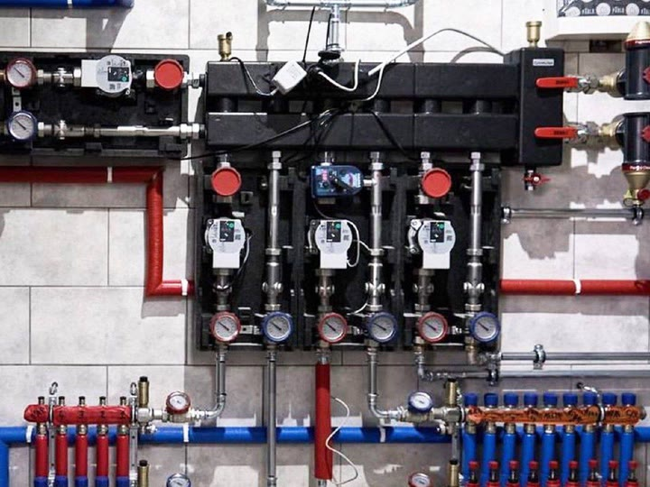
Гидрострелка и насосные группыТёплый пол, радиаторы и бойлер не отбирают воду друг у друга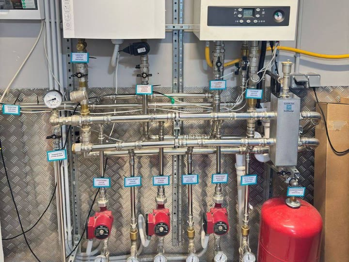
Каждая линия подписанаЧерез год никто не помнит, что куда идёт. Бирки помнят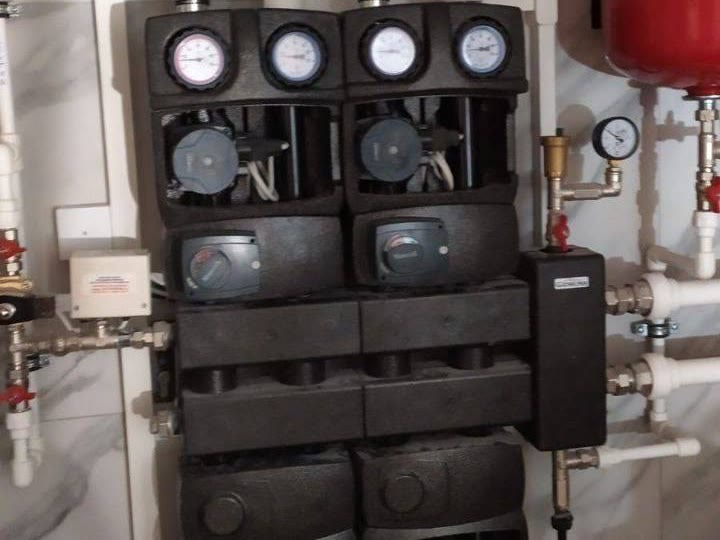
Насосные группы котельнойУ каждого контура свой насос и термометр — температуру видно не разбирая узел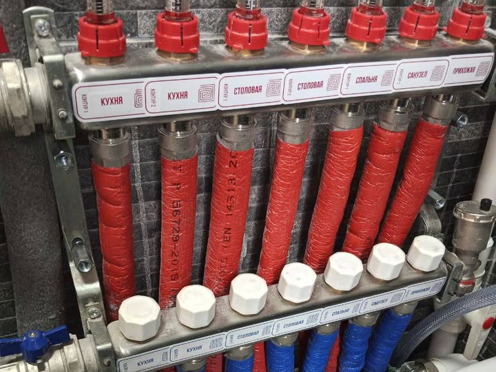
Коллектор тёплого полаКонтуры подписаны по комнатам — потом не гадать, что перекрывать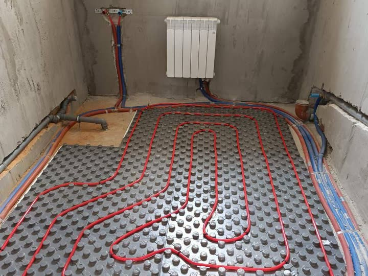
Контуры тёплого полаКладём улиткой: подача и обратка идут рядом, пол греет ровно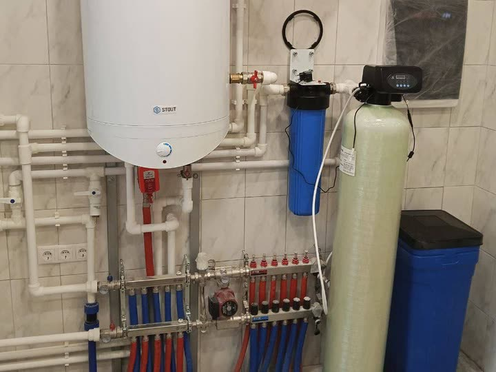
Котельная с водоподготовкойФильтр и умягчитель сразу в котельной: жёсткая вода быстро сажает бойлер и котёл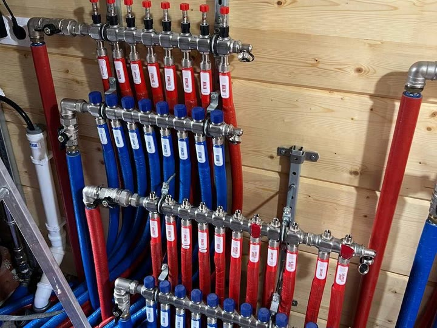
Четыре коллектора с биркамиК каждой точке своя линия — потёк смеситель, перекрыли одну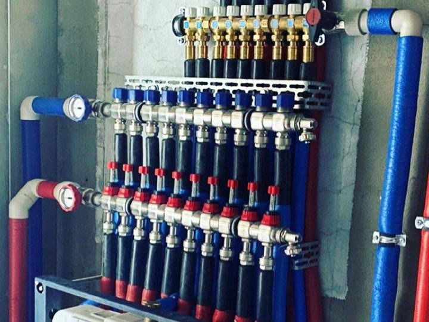
Коллекторная разводка водыОт коллектора к каждой точке своя труба — без тройников, которые текут в стене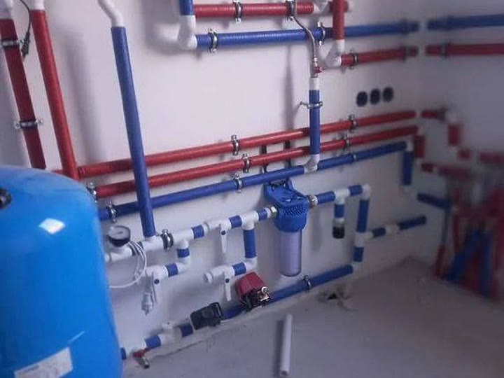
Узел ввода с фильтромБак, фильтр и краны собраны рядом — перекрыть и обслужить можно в одном месте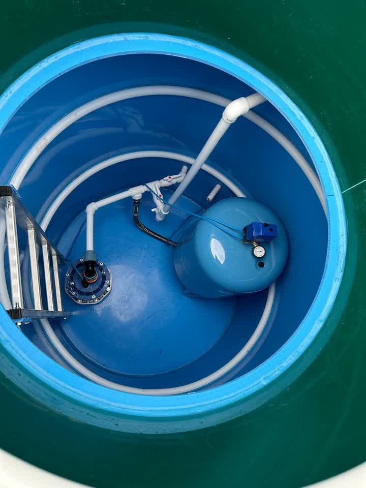
Кессон над скважинойСпускаемся и обслуживаем — откапывать ничего не надо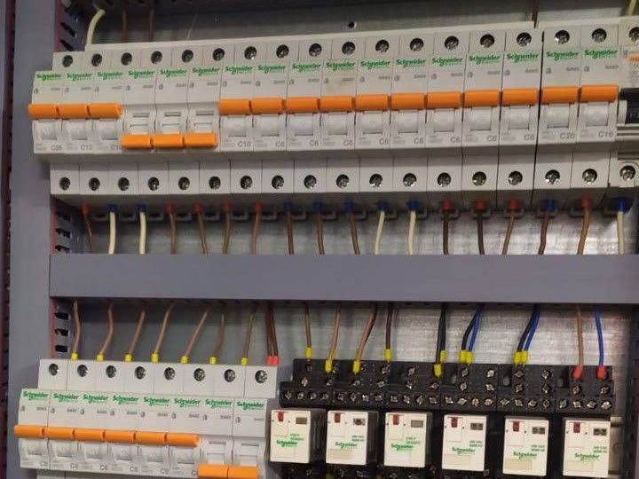
Щит с автоматикойЖилы в наконечниках и разведены рядами — потом в щите разберётся любой электрик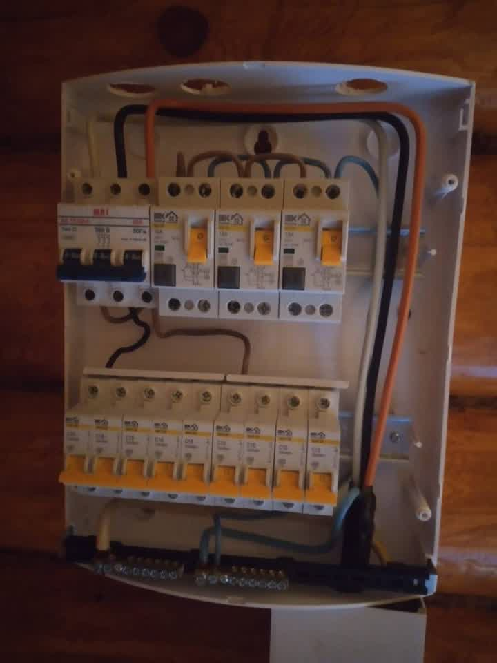
Защита на каждую группуВводной автомат, УЗО и свой автомат на линию — выбьет только проблемную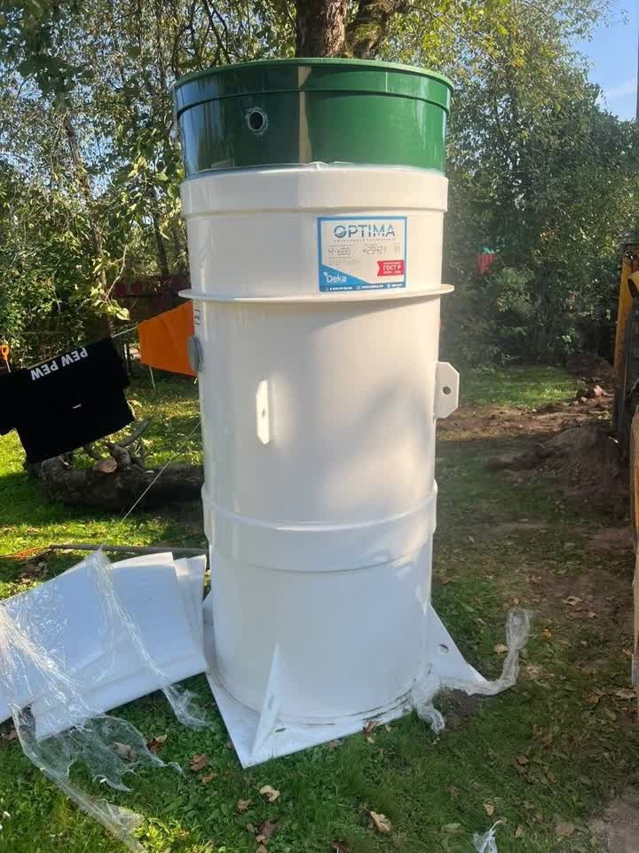
Станция на участкеНад землёй остаётся только горловина с люком Станция идёт в котлованОснование готово, корпус ставим без перекоса
Станция идёт в котлованОснование готово, корпус ставим без перекоса
 Горловина с люкомВ уровень грунта: газонокосилка проходит поверху
Горловина с люкомВ уровень грунта: газонокосилка проходит поверху
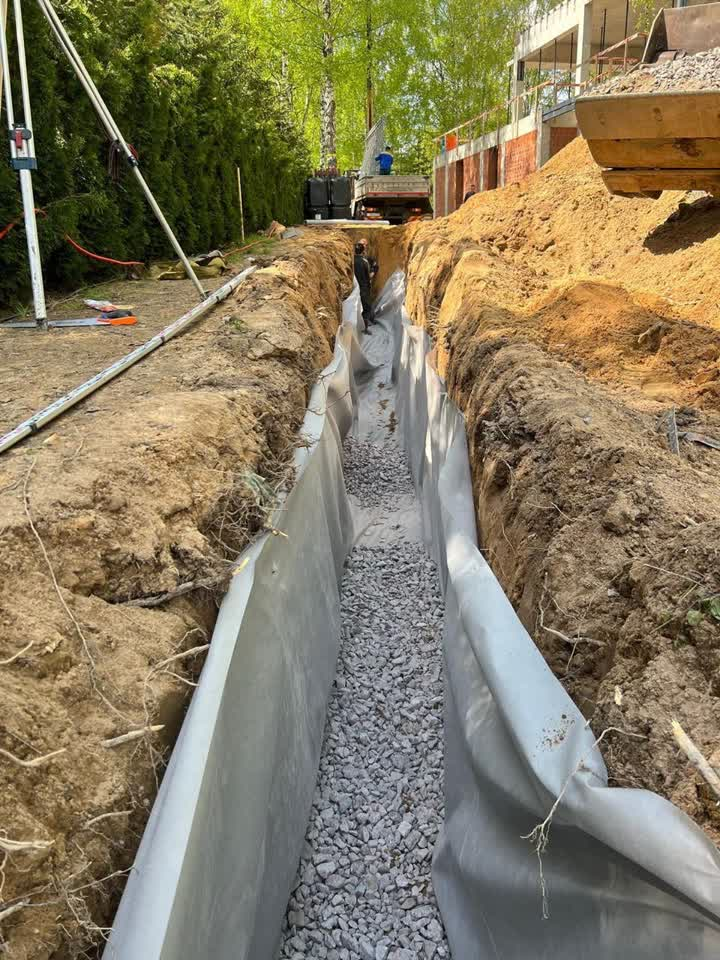
Траншея под дренажГеотекстиль по стенкам, щебень на дне — труба не заиливается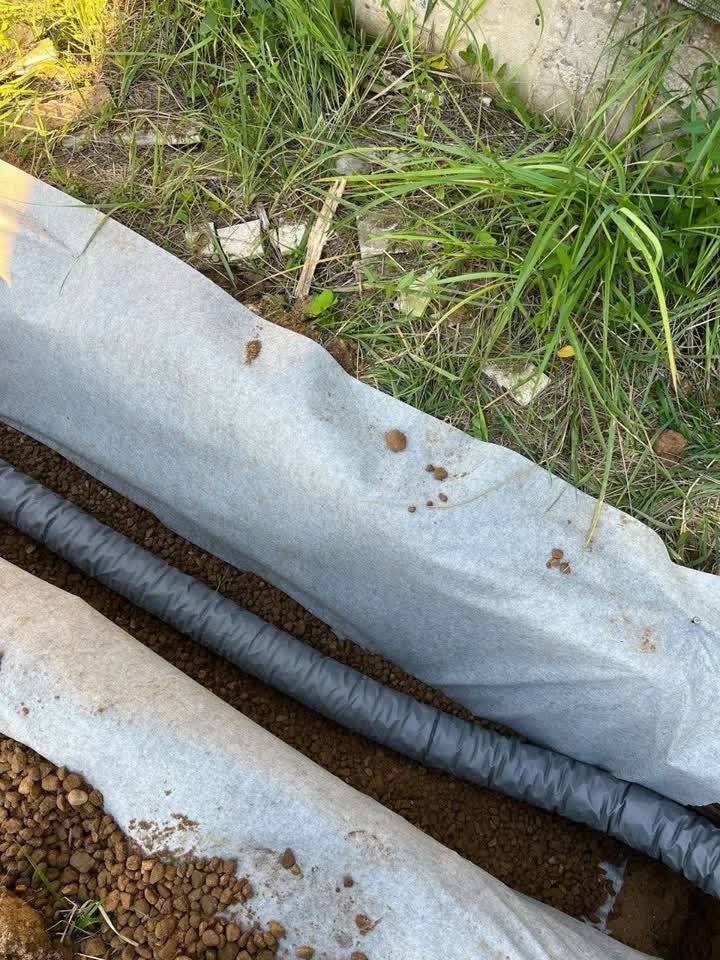
Труба в геотекстилеОбёрнута целиком: грунт внутрь не попадёт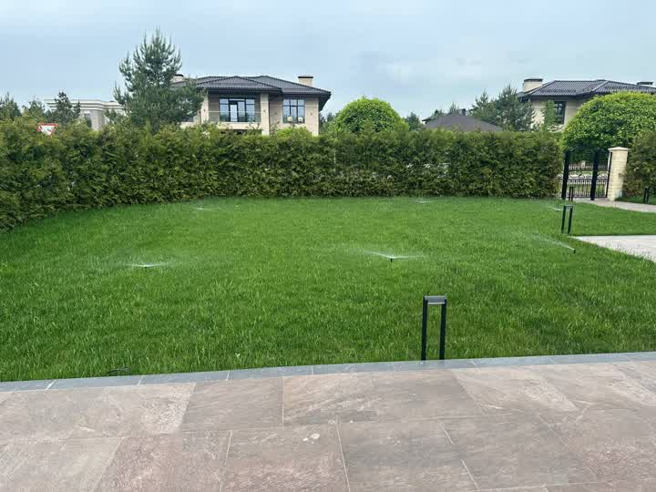
Участок целикомГазон разбит на зоны и поливается по очереди — напора хватает каждой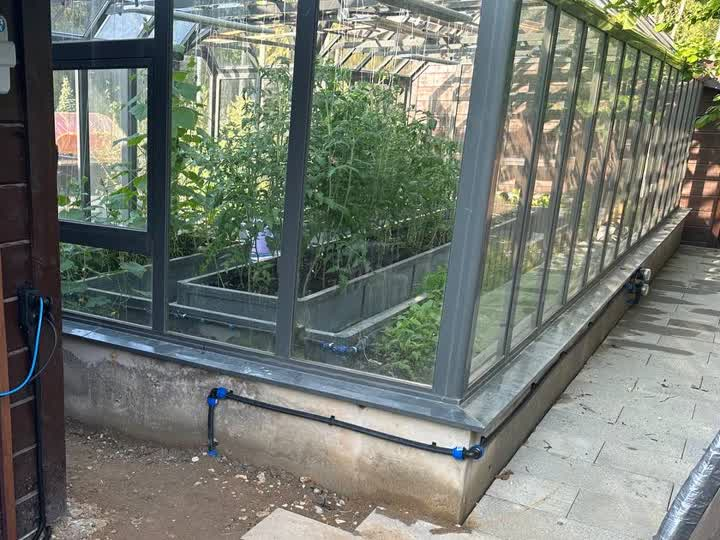
Своя ветка на теплицуТруба заведена под грядки — теплица поливается отдельно от газонаЧастые вопросы
Наши. Снимает мастер на объекте между делом, обычным телефоном — поэтому кадры разного качества и без студийного света. Красивые картинки из каталогов найти легко, но по ним ничего не поймёшь про того, кто придёт к вам на участок.
Зависит от дома: площадь, число контуров, какое оборудование. Цену называем после выезда — по фотографии её не угадать, а обманывать цифрой «от» не хотим. Выезд и расчёт бесплатные.
Сами. Поэтому и берёмся за весь участок целиком: одна бригада копает траншею под септик, она же тянет в ней кабель и трубу воды.
Да, круглый год. Зимой техника свободнее, а земляные работы возможны — просто дороже по трудозатратам. Что именно меняется на морозе, расскажем на выезде.
Ещё мы делаем
Заявка на выезд
Отвечаем круглосуточно: звоните в любое время или оставьте заявку — перезвоним в течение 15 минут.